DD7 — mắt cá chân & bàn chân¶
26 xương, 33 khớp, cơ chế tang trống và Tại sao giày dép của bạn quan trọng hơn vợt của bạn
BẢN ĐỒ 📋 TÀI LIỆU¶
bàn chân là a 26-xương, 33-khớp, 19-cơ, 7.000+ dây thần kinh máy kết thúc. Nó là phần duy nhất của cơ thể bạn tiếp xúc liên tục với mặt đất. Nó là nền tảng của chuỗi động học (DD1). Nhận được bàn chân sai và không có gì ở trên nó hoạt động đúng.
Bao gồm: 26 xương trong 3 khu vực (chân sau, chân giữa, chân trước), cơ chế tang trống (cân gan bàn chân là cáp căng), nội tại so với ngoại lai cơ, 7.000 dây thần kinh kết thúc và phản xạ 30 mili giây, vị trí cầu chân ngoài bàn chân (30–45°) và cách quần vợt giày ảnh hưởng (hoặc phá hủy) bàn chân hoạt động.
Những hạng mục KHÔNG bao gồm: đầu gối (DD6), chi tiết mắt cá chân khớp với chấn thương dây chằng (Giải phẫu quần vợt Ch.10), hoặc lựa chọn chạy giày (ngoài ghi chú dành riêng cho quần vợt).
Thời gian đọc 35–45 phút.
Mục lục¶
| # | English |
|---|---|
| 1 | 26 xương trong 3 Vùng |
| 2 | 19 cơ — nội tại vs ngoại lai |
| 3 | cân gan bàn chân và cơ chế tang trống |
| 4 | các vòm — Theo chiều dọc và ngang |
| 5 | Kết thúc 7.000 dây thần kinh — Phản xạ 30 giây bàn chân |
| 6 | Cầu Chân Ngoài — bàn chân Vị trí 30–45° |
| 7 | Gợi ý Hạnh phúc bàn chân - Căng thẳng trước cân gan bàn chân |
| 8 | Bẫy Tennis giày — 10 mm độ nâng gót, 15 mm khoang mũi giày |
Chương 1 — 26 xương trong 3 khu vực¶
Con người bàn chân có 26 xương, được tổ chức thành 3 vùng chức năng: chân sau (diện tích mắt cá chân), chân giữa (vòm), chân trước (các ngón chân và xương bàn chân). Chúng cùng nhau tạo thành 33 khớp. bàn chân KHÔNG PHẢI là một nền tảng cứng nhắc. Đó là một cấu trúc THÍCH ỨNG thay đổi hình dạng theo từng bước.
3 Vùng của bàn chân¶
| Phân vùng | # xương | Tên | Chức năng | Bản dịch Tennis |
|---|---|---|---|---|
| Chân sau | 7 | xương sên, xương gót (gót chân), xương thuyền, xương lập phương + 3 dạng hình nêm (phía trong, chất trung gian, phía ngoài) | Hấp thụ sốc (gót chân tấn công), trục xương sên để đảo ngược/đảo ngược | "Spring" — gót chân xuất hiện đầu tiên khi hạ cánh, sau đó là trục xương sên |
| Giữa bàn chân | 5 (xương thuyền, xương lập phương, 3 chữ hình nêm) | Tạo thành vòm — cây cầu của bàn chân | Lưu trữ và giải phóng năng lượng đàn hồi trong quá trình đi lại | Bản thân "mùa xuân". xương gót → xương bàn chân qua cân gan bàn chân. |
| Chân trước | 14 | 5 xương bàn chân + 14 các xương đốt ngón (2 trong Big ngón chân, 3 trong nhau ngón chân) | Đẩy ra trong khi đi bộ. ngón chân lớn là xương CUỐI CÙNG rời khỏi mặt đất. | "Đòn bẩy" — ngón chân tuyệt vời rất quan trọng để đẩy lùi. |
33 khớp — Tại sao vấn đề di chuyển lại quan trọng¶
| khớp Loại | # in bàn chân | Vai trò |
|---|---|---|
| Chân sau | 4 (dưới sên, talocalcaneal, calcaneocuboid, dạng móng) | Đảo ngược/biến dạng, gan bàn chân/dorsiflexion |
| Giữa bàn chân | ~9 (cuneonavicular, intercuneiform, cuneocuboid) | vòm HỖ trợ, thích ứng tốt |
| Chân trước | ~20 (tarsometatarsal, metatarsophalangeal, interphalangeal) | Đẩy ra, kẹp chặt |
Chân Sau — The Pivot Point¶
| xương | Giải phẫu học | Vai trò của quần vợt |
|---|---|---|
| G54 | "mắt cá chân xương" — nằm giữa xương chày (ở trên) và xương gót (bên dưới). Không có tệp đính kèm cơ. Chỉ là một trục xoay. | Truyền lực từ chân đến bàn chân. Bất kỳ rối loạn chức năng nào cũng có thể bù đắp cho → toàn bộ chân. |
| G20 (gót chân xương) | Lớn nhất bàn chân xương. gân gót đính kèm ở đây. | xương đầu tiên chạm đất trên một bậc. |
| G21 | phía trong giữa bàn chân. Tibialis sau gắn ở đây. | "Nền tảng" của phía trong theo chiều dọc vòm. |
| G41 | phía ngoài giữa bàn chân. Peroneus longus gân đi qua đây. | Giúp ổn định cột phía ngoài trong quá trình đẩy ra. |
Nguồn: Giai_phau_Ban_chan_Tennis.docx Ch.1-2 (Hệ xương và khớp). Giải phẫu quần vợt Ch.7.
Chương 2 — 19 cơ (nội tại vs ngoại lai)¶
bàn chân có HAI bộ cơ: nội tại cơ (11 nhỏ cơ hoàn toàn nằm trong bàn chân) và ngoại lai cơ (8 cơ có nguồn gốc ở chân và chèn vào bàn chân). Họ có những công việc khác nhau.
Nguồn của người dùng tạo ra sự khác biệt: "Cơ chày trước, cơ mác dài, cơ tam đầu cẳng chân bám vào bàn chân từ xa. Chúng tôi tạo lực lượng lớn nhưng phản ứng chậm." (Tibialis anterior, peroneus longus, gastrocnemius gắn vào bàn chân từ xa. Chúng tạo ra lực lớn nhưng phản ứng chậm.)
19 bàn chân cơ — nội tại vs ngoại lai¶
| Loại | # | Ví dụ thực hiện sáng chế | Vai trò Chính | Bản dịch Tennis |
|---|---|---|---|---|
| nội tại | 11 | Ảo giác kẻ bắt cóc, flexor digitorum brevis, quadratus plantae, lumbricals (4), interossei (4 — nhưng chỉ có 3 trong bàn chân), ảo giác adductor | bàn chân shape, fine control, cảm giác bản thể | Điều chỉnh bàn chân lên bề mặt. Giữ vòm trong khi đẩy. |
| G27 | 8 | Tibialis anterior, tibialis posterior, peroneus longus, peroneus brevis, peroneus tertius, extensor digitorum longus, extensor hallucis longus, flexor digitorum longus | Ép buộc sản xuất, di chuyển thô | Đẩy lùi, phía ngoài ổn định, mắt cá chân định VỊ |
Những Anh Hùng Bị Lãng Quên nội tại cơ¶
nội tại bàn chân cơ KHÔNG tạo ra lực lớn. Chúng tạo ra sự KIỂM SOÁT TỐT. Chúng điều chỉnh hình dạng của bàn chân xuống mặt đất. Chúng duy trì vòm trong quá trình tải động. Chúng bắn 30 mili giây TRƯỚC ngoại lai cơ — kích hoạt trước bàn chân cho tải sắp tới.
Hơn 50 sự thật: teo nội tại bàn chân cơ do đeo giày. giày hiện đại HỖ TRỢ vòm, vì vậy nội tại cơ không cần phải hoạt động. Chúng teo. Đến tuổi 60, khối lượng nội tại bàn chân cơ nhỏ hơn ~30% so với tuổi 20.
Bản sửa lỗi: thời gian đi chân trần. 5–10 phút mỗi ngày trên cỏ hoặc thảm. Đi bộ, đứng, thực hiện các bài tập "ngắn bàn chân" (cố gắng rút ngắn bàn chân mà không làm cong các ngón chân). Sau 4 tuần, nội tại sức mạnh trở lại.
Nguồn: Giai_phau_Ban_chan_Tennis.docx Ch.3-4.
Chương 3 — cân gan bàn chân và cơ chế tang trống¶
cân gan bàn chân là một dải mô liên kết dày chạy từ xương gót (gót chân) đến đáy của các ngón chân. Nó giống như một SỢI CÁP chạy dưới bàn chân. Khi ngón chân lớn kéo dài (trong quá trình đẩy ra), cáp sẽ siết chặt. Điều này thắt chặt vòm. Đây là cơ chế tang trống — bàn chân trở thành một đòn bẩy cứng nhắc để đẩy ra.
tang trống là lý do bạn có thể CHẠY NƯỚC RÚT. Nếu không có nó, bàn chân sẽ sụp đổ khi bị đẩy ra. Với nó, bàn chân trở thành một đòn bẩy cứng nhắc — đẩy 2–3lần hiệu quả hơn.
tang trống cho quần vợt: mỗi bước phân chia, mỗi lần đẩy, mỗi lần phục hồi rộng — tang trống kích hoạt. Một bàn chân với tang trống kém (sụp đổ vòm, hạn chế ngón chân duỗi) mất 20–30% công suất đẩy ra. Đầu gối bù đắp viêm → gân bánh chè. Hông bù cho sự căng thẳng của → adductor.
cơ chế tang trống — Từng bước¶
| Bước | Vị trí | Chuyên gì xảy ra |
|---|---|---|
| 1. bàn chân phẳng | gót chân đình công, bàn chân tiếp xúc với mặt đất | tang trống LỎNG LẺO. bàn chân DI ĐỘNG. Thích nghi với bề mặt. |
| 2. Trung cấp | Trọng lượng cơ thể trên bàn chân, vòm nén 3–4 mm | tang trống vẫn lỏng lẻo. nội tại cơ cháy. |
| 3. gót chân tắt | gót chân nâng, chuyển trọng lượng về chân trước | cân gan bàn chân bắt đầu căng thẳng. |
| 4. Lớn ngón chân duỗi | ngón chân dorsiflexes lớn (duỗi) 60–90° khi cơ thể di chuyển qua nó | WINDSLASS KÍCH HOẠT. Dây cáp thắt chặt. vòm tăng lên. bàn chân trở nên cứng nhắc. |
| 5. Đẩy lùi | bàn chân là đòn bẩy cứng. ngón chân-off. | Công suất đẩy tối đa. |
3 thất bại của tang trống¶
| # | Sự cố | Chuyên gì xảy ra | Kết quả quần vợt |
|---|---|---|---|
| 1 | ngón chân cái rigidus (viêm khớp lớn ngón chân) | Big ngón chân không thể mở rộng 60°. tang trống không tham gia. | Mất điện đẩy ra. Bù đầu gối. |
| 2 | G2 | cân gan bàn chân bị viêm. Cáp đã "quá chặt". | Đau ở bước đầu tiên vào buổi sáng. Nước mắt vi mô trong cân. |
| 3 | Rối loạn chức năng xương chày sau gân | cơ hỗ trợ vòm là yếu. vòm sụp đổ trong giai đoạn giữa. | "Căn hộ dành cho người lớn bàn chân." tang trống không thể tham gia. |
50+ tang trống Thực tế — Tại sao lực đẩy giảm¶
Ở tuổi 60, Big ngón chân duỗi thường giảm 15–25°. tang trống tham gia kém hiệu quả hơn. Công suất đẩy giảm 20–30%.
Bản sửa lỗi: các bài tập vận động lớn ngón chân. Ngồi với bàn chân trên đầu gối đối diện. Kéo lưng ngón chân lớn (duỗi) nhẹ nhàng. Giữ 30 giây. 5 lần lặp lại × 3/ngày. Sau 4 tuần, duỗi cải thiện 10–15°.
Cue tennis: "nhấn qua ngón chân lớn." Khi bạn đẩy một cú thuận tay, thứ CUỐI CÙNG chạm đất phải là miếng đệm lớn ngón chân. Nếu cú đẩy nằm trên quả bóng của bàn chân hoặc nhỏ các ngón chân, tang trống không tương tác.
Nguồn: Giai_phau_Ban_chan_Tennis.docx Ch.5 (Cân gan chân và cơ chế tang trống).
Chương 4 — các vòm (Dọc và Ngang)¶
bàn chân có HAI các vòm hoạt động cùng nhau: phía trong DỌC vòm (bên trong bàn chân, từ gót chân đến lớn ngón chân) và NGANG vòm (qua bàn chân, giữa xương bàn chân). Chúng cùng nhau tạo ra lò xo và thanh chống.
Dọc phía trong vòm: người nổi tiếng hơn. Nó hấp thụ sốc trong quá trình gót chân tấn công và bật lại trong quá trình đẩy lùi. Được hỗ trợ bởi cân gan bàn chân, xương chày sau gân, lò xo dây chằng, và nội tại cơ.
Chiều ngang vòm: người anh hùng vô danh. Nó chạy qua bàn chân ở cấp độ chữ hình nêm và xương bàn chân. Nó ngăn không cho bàn chân bắn tung tóe trong quá trình đẩy ra. Trong quần vợt, CHÂN NGOÀI sử dụng vòm nằm ngang làm THANH CHỐNG — bàn chân nằm nghiêng 30–45°, và chân ngang vòm chuyển lực ngang thành lực nén dọc.
2 các vòm — Các vai trò khác nhau¶
| vòm | Hình Dạng | Chức năng | Vai trò của quần vợt |
|---|---|---|---|
| phía trong theo chiều dọc | Đường cong từ xương gót đến đầu xương bàn chân thứ nhất (lớn ngón chân) | Hấp thụ sốc (gót chân tấn công), độ giật đàn hồi (đẩy ra) | "Mùa xuân" — dự trữ và giải phóng năng lượng |
| Ngang | Đường cong ngang chữ hình nêm + xương bàn chân nền | Ngăn chặn sự bắn tung tóe, cung cấp phía ngoài độ cứng | "Strut" — chuyển đổi lực ngang thành lực nén dọc ở tư thế rộng hơn |
Chuỗi thu gọn vòm (→Đầu → gối vẹo trước)¶
Khi phía trong dọc vòm sụp đổ (quá trán): bàn chân cuộn vào trong. xương chày quay bên trong. Đầu gối đi vào valgus. Hông rơi xuống.
Phản ứng chuỗi động học: bàn chân → xương chày → thắt lưng → hông → đầu gối. Mỗi liên kết xoay vào trong. Chuỗi kết thúc ở L4-L5 (DD4).
Bẫy quần vợt: người chơi bị ngã các vòm cảm thấy "chậm hơn." Chân họ không chậm hơn. Họ đang mất dần sức mạnh trong chuỗi. vòm hấp thụ lực tác dụng lên quả bóng.
Bài tập "Ngắn bàn chân" — các vòm Kích hoạt¶
| Bước | Hành động | Tại sao |
|---|---|---|
| 1. Đứng chân trần, cân đều | Vị trí cơ sở | Tránh bồi thường |
| 2. Cố gắng rút ngắn bàn chân (kéo quả bóng của bàn chân về phía gót chân) MÀ KHÔNG quăn các ngón chân | Chuyển động CHÍNH | Curls = ngoại lai. Shortening = nội tại. |
| 3. Giữ 10 giây | Độ bền | Xây dựng nội tại cơ sức bền |
| 4. 10 lần lặp lại × 3/ngày | Tần suất | Quá trình đảo ngược teo mất 4–6 tuần |
Nguồn: Giai_phau_Ban_chan_Tennis.docx Ch.6.
Chương 5 — Kết thúc 7.000 dây thần kinh (Phản xạ 30-ms bàn chân)¶
Đế của bàn chân có hơn 7.000 đầu dây thần kinh. Chúng là dòng thông tin đầu tiên của cơ thể về thế giới. Chúng phát hiện áp suất, độ rung, nhiệt độ, đau. Chúng gửi tín hiệu lên tủy sống trong 30 mili giây — NHANH hơn nhận thức có ý thức (~80 ms).
Phản xạ 30ms: khi bàn chân trượt trên sân ướt, dây thần kinh sẽ tắt lửa. Tín hiệu đến tủy sống trong 30 ms. Tủy sống sẽ gửi một SỰ ĐIỀU CHỈNH trở lại cơ trong 30 ms. Tổng số phản hồi: 60 ms. Bạn đã chuẩn bị tinh thần TRƯỚC KHI bạn có ý thức biết mình bị trượt.
Sự suy giảm 50+: đến 65 tuổi, số lượng dây thần kinh kết thúc ở đế giảm ~30%. cảm giác bản thể suy giảm. Phản xạ 30-ms trở thành phản xạ 50-ms. Thời gian khôi phục sau khi trượt tăng lên. Nguy cơ té ngã tăng lên.
Bản đồ phân bố áp suất¶
| Vùng áp suất | Người chơi chuyên nghiệp | 3.5 Người chơi Câu lạc bộ | Tại sao bảo hiểm quyền sở hữu quan trọng |
|---|---|---|---|
| Lớn ngón chân (ngón chân cái) | 28% | 5–10% | Big ngón chân là đòn bẩy CUỐI CÙNG trong quá trình đẩy ra. Ưu điểm sử dụng nó. |
| Hồng hào ngón chân (thứ 5 xương bàn chân) | 22% | 5–10% | phía ngoài ổn định. Ưu điểm sử dụng nó. |
| Khác các ngón chân + chân trước | 35% | 40–45% | Trải đều. |
| Giữa bàn chân | 10% | 25–35% | Người chơi 3,5 có tiếp xúc giữa bàn chân PHẲNG (vòm sụp đổ). |
| gót chân | 5% | 15–20% | gót chân quá tải = không đẩy ra. |
Bài kiểm tra phản xạ quần vợt bàn chân — Tự kiểm tra¶
Đứng trên một chân, nhắm mắt lại. Dành thời gian cho bạn bè.
Tiêu chuẩn chuyên nghiệp: Hơn 30 giây, không chao đảo.
50+ tiêu chuẩn: 10–15 giây là bình thường. Dưới 10 giây = nguy cơ té ngã cao.
Bản sửa lỗi: thực hành hàng ngày. Nhắm mắt trên một chân là bài tập duy nhất được chứng minh là GIẢM nguy cơ té ngã ở hơn50 người lớn. 3×30 giây mỗi bên, hàng ngày.
Nguồn: Giai_phau_Ban_chan_Tennis.docx Ch.7-8 (7.000 dây thần kinh kết thúc, phản xạ 30 ms, phân bố áp suất).
Chương 6 — Cầu Chân Ngoài (bàn chân Vị trí 30–45°)¶
Khi bạn đánh một cú thuận tay ở tư thế mở, CHÂN NGOÀI của bạn (chân trước, chân trái để thuận tay phải) là CẦU NỐI. Nó hỗ trợ tải trọng nén lên đến 3–5 lần trọng lượng cơ thể. bàn chân PHẢI có góc 30–45° (không thẳng).
Tại sao lại là 30–45°? góc sử dụng NGANG vòm làm thanh CHỐNG. Lực ngang từ xích đu phân hủy thành lực nén dọc. Lực đi lên qua xương sên, xương chày, đầu gối và vào xương đùi — tất cả đều theo một đường gần thẳng.
Nếu bàn chân thẳng (0°): tất cả các lực ngang trở thành ứng suất valgus trên đầu gối → phía trong tải trọng ma sát băng tần → CNTT. Đầu gối đau. phía ngoài bàn chân sụp đổ.
Nếu bàn chân có góc >60° (xoay quá mức): bàn chân mất chức năng thanh chống. Ngang vòm sụp đổ. Lực trở thành lực cắt trên đầu gối.
Chân ngoài bàn chân Vị trí — 3 vùng¶
| bàn chân Góc | Phân vùng | Lực phân hủy | Hiệu ứng đầu gối |
|---|---|---|---|
| 0° Sảnh | Cá voi | Tất cả → valgus nằm ngang | Nạp băng tần IT + sụn chêm cao |
| 30–45° | Tối ưu | Nén → dọc theo chiều ngang | Tải trọng đầu gối thấp. Truyền lực tối đa. |
| >60° | Xoay quá mức | Mất chức năng thanh chống | Cắt trên đầu gối. vòm sụp đổ. |
Mỏ neo 3 điểm bàn chân — Chân máy bàn chân¶
Chân máy bàn chân là vị trí VÀNG cho những cú chạm đất. Ba điểm tiếp xúc: gót chân (giữa), bóng của bàn chân dưới lớn ngón chân, bóng của bàn chân dưới hồng hào ngón chân. Ba điểm này tạo thành một hình tam giác. Tam giác CỨNG. Tâm của tam giác là “tripod” — tâm chịu lực.
Các bài kiểm tra. đứng chân trần. Cố gắng chỉ nâng ngón chân lớn trong khi giữ bóng của bàn chân dưới ngón út ngón chân trên mặt đất. Nếu bạn không thể, giá ba chân của bạn sẽ bị sập. Thực hành "short bàn chân" hàng ngày cho đến khi bạn có thể.
Nguồn: Giai_phau_Ban_chan_Tennis.docx Ch.9-11.
Chương 7 — Gợi ý Hạnh phúc bàn chân (Căng thẳng trước cân gan bàn chân)¶
"Happy bàn chân" trong quần vợt có nghĩa là bàn chân liên tục chuyển động — không bao giờ nằm dài trên mặt đất. Người dùng định nghĩa nó cụ thể hơn: "Giữ gót lơ lửng giúp cân gan chân ở trạng thái tiền căng." (Giữ nổi gót chân giữ cân gan bàn chân ở trạng thái căng trước.)
Nguyên tắc căng trước: khi cân gan bàn chân được căng trước (gót chân ngoài mặt đất), bàn chân đã sẵn sàng để bắt đầu hành động. Bước phân tách có thể khởi chạy theo bất kỳ hướng nào ngay lập tức. Không chậm trễ. Không có "thời gian tải".
Vị trí Hạnh phúc bàn chân — Giải phẫu học¶
| Thành phần | Vị trí | cơ Bang |
|---|---|---|
| gót chân | Hơi cao khỏi mặt đất (1–2 cm) | Bê (gastrocnemius + soleus) co bóp nhẹ |
| Bóng của bàn chân | In contact with ground | Tibialis anterior relaxed |
| Big ngón chân | Light contact, not gripping | Flexor hallucis longus relaxed |
| cân gan bàn chân | PRE-TENSIONED | Ready to spring |
| vòm | Slightly raised (active) | nội tại cơ engaged |
The Cost of Flat bàn chân in Tennis¶
If your gót chân stays flat on the ground for >2 seconds during a point, you have "lazy bàn chân." The cân gan bàn chân goes slack. The split-step reaction time increases from 100 ms to 250 ms. You lose 150 ms — enough for an opponent to hit a winner.
The 50+ habit: most recreational players let the gót chân drop between shots. They're waiting for the next ball. They're flat-footed. The pro keeps the gót chân up — always ready. The pro's split-step is half the time of the recreational player.
Bản sửa lỗi: the "elevator gót chân." Between every shot, lift the gót chân 1 cm. Count: split-step → hit → recover → gót chân UP. Make it a rhythm. After 2 weeks of conscious practice, it becomes automatic.
Source: Giai_phau_Ban_chan_Tennis.docx Ch.10 (Liên hệ với happy bàn chân).
Chapter 8 — The Tennis giày Trap (10 mm độ nâng gót, 15 mm khoang mũi giày)¶
The user's source has a SHOCKING statistic: "Hầu hết giày tennis nâng gót 10 mm, thu hẹp mũi 15 mm so với bàn chân tự nhiên. Hệ quả là ngón cái không duỗi được, tang trống giảm hiệu quả, cơ nội sinh teo dần." (Most tennis giày lift the gót chân 10 mm and narrow the khoang mũi giày by 15 mm compared to the natural bàn chân. The result is the big ngón chân can't extend, the tang trống is less effective, and nội tại cơ atrophy over time.)
The 10 mm độ nâng gót shortens the calf. Over time, the calf adapts to the shorter length. When you take the giày off, the calf "feels" too long. You feel tight. You stretch the calf. The calf SHORTENS further. A vicious cycle.
The 15 mm khoang mũi giày narrowing prevents the big ngón chân from extending 60–90° at push-off. The tang trống doesn't engage. Push-off power drops 20–30%.
The Tennis giày Numbers — What to Look For¶
| Number | What It Means | What You Want |
|---|---|---|
| gót chân-to-ngón chân drop | The mm of lift from gót chân to ngón chân | 4–8 mm max. NOT 10+ mm. |
| khoang mũi giày width | The mm of horizontal space for các ngón chân | Your natural bàn chân width + 5–10 mm. NOT -15 mm. |
| gót chân counter stiffness | How rigid the back of the giày is | Moderate. Not floppy, not board-stiff. |
| Midsole cushioning | How much shock absorption under the gót chân | Moderate. Too soft = unstable. Too hard = khớp impact. |
| Outsole pattern | The tread pattern on the bottom | Herringbone for hard courts. Modified herringbone for clay. |
| Upper material | The fabric on top | Breathable mesh. Avoid heavy leather (waterlogging). |
The 3 Tennis giày Mistakes¶
| # | Mistake | Consequence | The Fix |
|---|---|---|---|
| 1 | Wearing giày >6 months old | Midsole cushioning degrades 30–50% | Replace every 4–6 months for regular players |
| 2 | Wearing the wrong surface giày | Wrong tread = slipping or sticking | Hard court giày on hard court. Clay giày on clay. |
| 3 | Tight khoang mũi giày "for support" | Big ngón chân can't extend. tang trống fails. | Buy giày with ngón chân ROOM. Wiggle các ngón chân inside. |
The 50+ bàn chân Longevity Protocol¶
| Thành phần | Tần suất | Tại sao |
|---|---|---|
| Barefoot time on grass or carpet | 5–10 min/day | Re-activates nội tại bàn chân cơ |
| Short bàn chân exercise | 3×10/day | Reverses vòm collapse |
| Big ngón chân duỗi stretch | 5×30 sec × 3/day | Maintains tang trống engagement |
| Single-leg balance eyes closed | 3×30 sec × 3/day | Maintains 7,000 dây thần kinh endings |
| Replace tennis giày every 4–6 months | Per pair | Midsole degrades |
| Rotate 2 pairs | If possible | Midsole recovers between sessions |
Source: Giai_phau_Ban_chan_Tennis.docx Ch.12-14. Reference: minimalist giày research, bàn chân health literature.
📋 DD7 CARD — Printable¶
The bàn chân is a 26-xương, 33-khớp, 7,000-dây thần kinh-ending machine. The tang trống (cân gan bàn chân as cable) makes push-off powerful. Outside-leg bridge: bàn chân at 30–45°. Tennis giày with 10 mm độ nâng gót + 15 mm khoang mũi giày narrowing destroy bàn chân function over time.
- 26 xương / 33 khớp / 19 nội tại+ngoại lai cơ
- 7,000+ dây thần kinh endings in sole
- 30 ms reflex (bàn chân → spinal cord → cơ)
- Big ngón chân extends 60–90° for tang trống to engage
- Push-off power drops 20–30% without tang trống
- Tennis giày: 10 mm độ nâng gót, 15 mm khoang mũi giày narrowing
- Pros: 28% pressure on big ngón chân, 22% on pinky
- 3.5 players: 5–10% on big ngón chân, 25–35% on midfoot
Letting the gót chân drop flat between shots (lazy bàn chân). The cân gan bàn chân goes slack. The split-step reaction time goes from 100 ms to 250 ms — enough time for the opponent to hit a winner. The fix: "Elevator gót chân" — keep the gót chân 1 cm off the ground.
- Short bàn chân: stand barefoot, shorten bàn chân without curling các ngón chân. 10 reps × 3/day.
- Big ngón chân duỗi Stretch: pull big ngón chân back, hold 30 sec. 5 reps × 3/day.
- Single-Leg Balance Eyes Closed: 30 sec each side. 3 reps × 3/day. Reduces fall risk in 50+.
"Heels up, tripod bàn chân, press through the big ngón chân."
🖼️ ILLUSTRATIONS¶
38 images available in Anatomy_Lab/images/DD7_ankles_feet/ (19 from Giai_phau_Ban_chan_Tennis.docx + 19 from Tennis Anatomy PDF).
Figure 2–3 — cơ-gân Structure of Dorsum of bàn chân¶
| Figure | Description | Image |
|---|---|---|
| 2 | cơ-gân structure during gót chân-lift preparation |  |
| 3 | Same — different angle |
Figure 4–7 — cơ chế tang trống¶
| Figure | Description | Image |
|---|---|---|
| 4 | Forefoot deformation under body weight (cơ chế tang trống) |  |
| 5 | Same — different view |  |
| 6 | Same — different view |  |
| 7 | Same — different view | 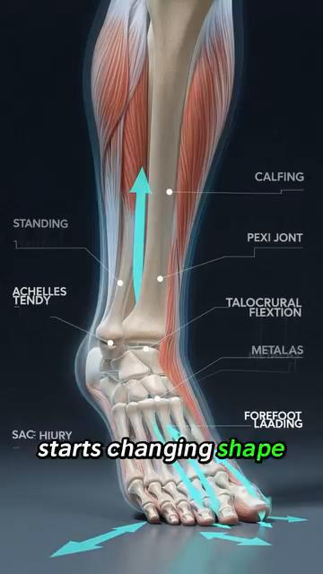 |
Figure 8–11 — Sole dây thần kinh Endings¶
| Figure | Description | Image |
|---|---|---|
| 8 | dây thần kinh endings of sole and orientation role | 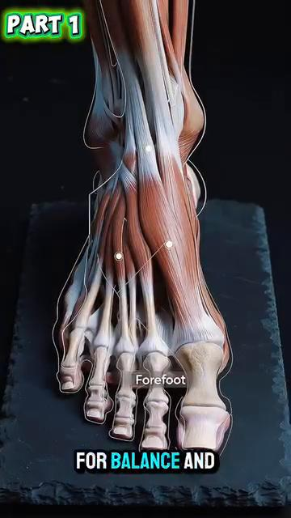 |
| 9 | Same — different angle | 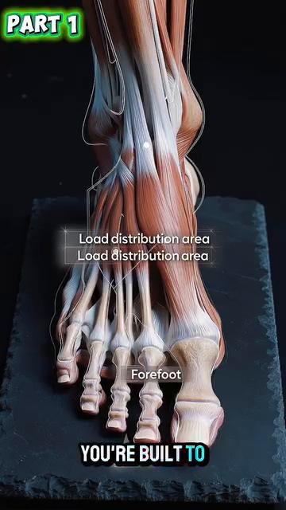 |
| 10 | Same — different angle | 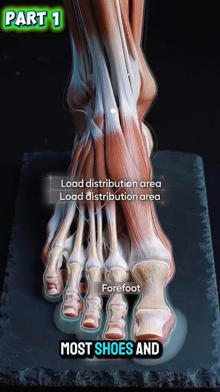 |
| 11 | Same — different angle | 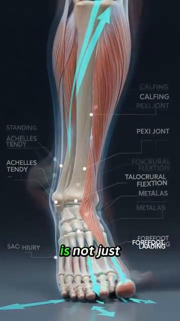 |
Figure 12–14 — Pressure Distribution¶
| Figure | Description | Image |
|---|---|---|
| 12 | Pressure control when gót chân is fully lifted | 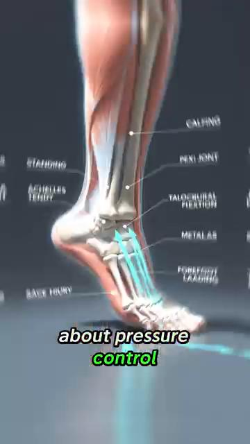 |
| 13 | Same — different view | 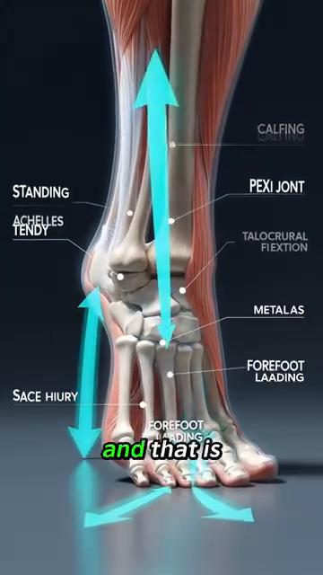 |
| 14 | Same — different view | 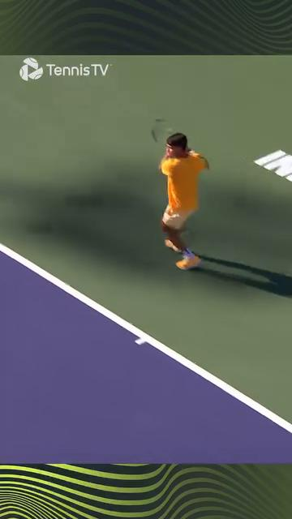 |
Figure 15–19 — Outside-Leg Bridge & Alcaraz Comparison¶
| Figure | Description | Image |
|---|---|---|
| 15 | Alcaraz mid-run, bàn chân not yet tripod | 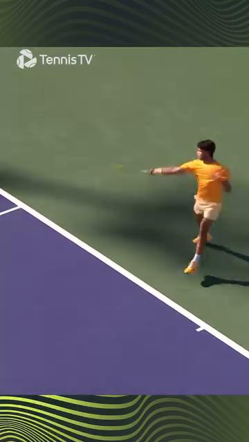 |
| 16 | Same — different view | 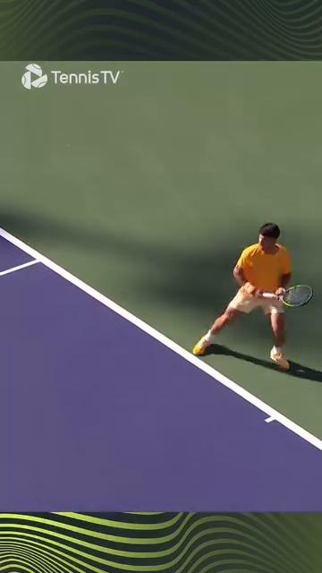 |
| 17 | Same — different view | 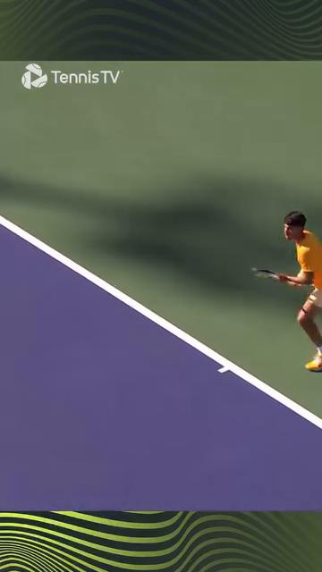 |
| 18 | Recovery + outside-leg bridge creation | 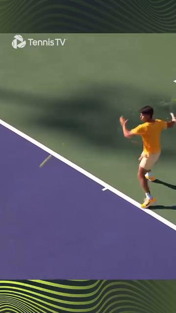 |
| 19 | Same — different view |  |
Figures 20–38 — Tennis Anatomy PDF Ch.7 (bàn chân/mắt cá chân)¶
| Figure | Description | Image |
|---|---|---|
| 20 | mắt cá chân khớp xương | 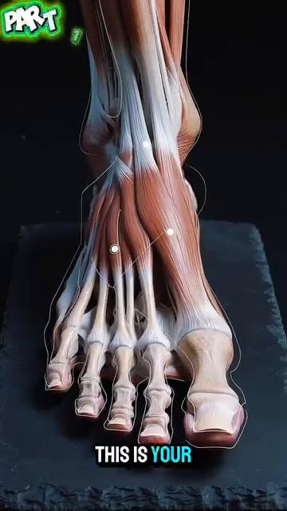 (Tennis Anatomy Fig.7.x) |
| 21 | khớp dưới sên detail | 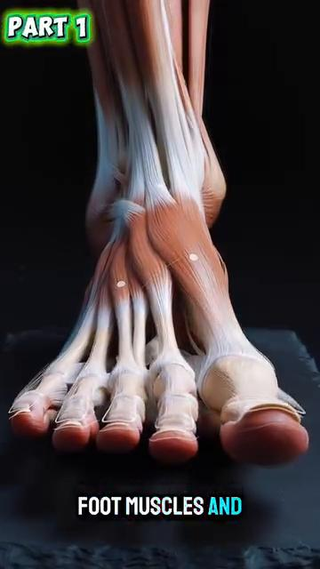 |
| 22 | gân gót attachment |  |
| 23 | cân gan bàn chân anatomy | 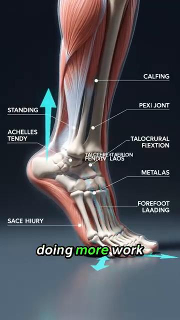 |
| 24 | Tibialis posterior gân | 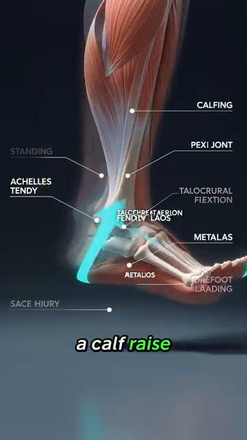 |
| 25–38 | Various bàn chân/mắt cá chân exercise demonstrations | 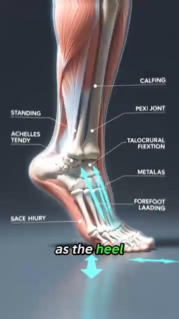 through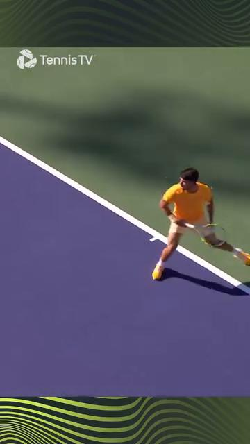 |
All image filenames verified to exist in Anatomy_Lab/images/DD7_ankles_feet/.
🔗 CROSS-REFERENCES¶
| Topic in DD7 | See Also |
|---|---|
| bàn chân tripod for groundstrokes | DD1 Player in Motion — the 6 critical angles at contact |
| Outside-leg bridge 30–45° | DD6 Knees — knee over 2nd ngón chân, bàn chân under hip |
| 7,000 dây thần kinh endings and cảm giác bản thể | DD8 Control System — vestibular + vision + cảm giác bản thể |
| vòm collapse → valgus → knee | DD6 Knees — ACL mechanism, patellofemoral pain |
| tang trống for push-off | DD1 Player in Motion — kinetic chain, ground reaction force |
| Happy bàn chân and split-step | DD8 Control System — reaction time, vision |
| Tennis giày selection | DD6 Knees — khớp preservation, less force on cartilage |
📚 SOURCES¶
| Source | Loại | What It Contributed |
|---|---|---|
Human anatomy/Giai_phau_Ban_chan_Tennis.docx |
User's Vietnamese notes (19 images) | 26 xương 33 khớp, hindfoot/midfoot/forefoot, nội tại vs ngoại lai cơ, tang trống, longitudinal + transverse các vòm, 7,000 dây thần kinh endings 30 ms reflex, pressure distribution 28%/22%, outside leg bridge 30–45°, happy bàn chân, tennis giày trap 10 mm/15 mm, rehabilitation program |
Tennis Knowledge/7.Tennis Books in pdf/Tennis Anatomy ( PDFDrive ).pdf Ch.7 (Legs) |
Reference textbook | bàn chân anatomy, mắt cá chân khớp, gân gót, calf cơ |
End of DD7 — mắt cá chân & bàn chân
Next: DD8 — The Control System (Vestibular, cảm giác bản thể, Vision, 50+ Body)